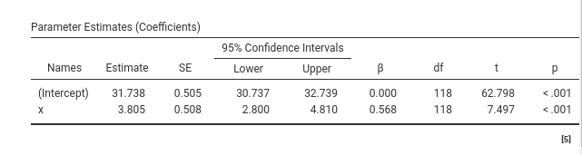
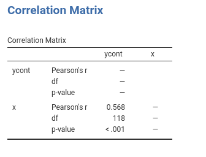
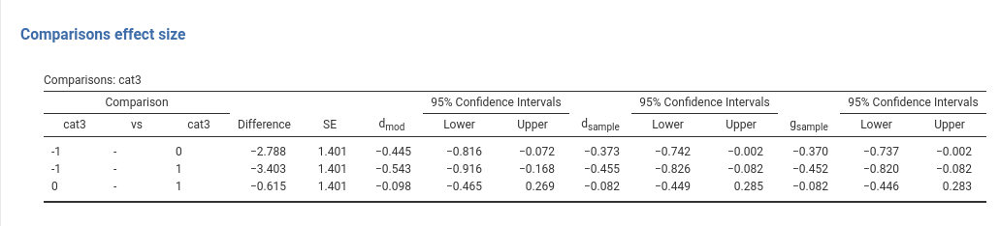
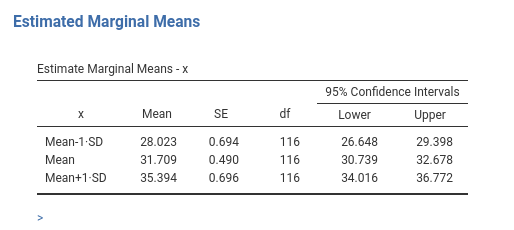
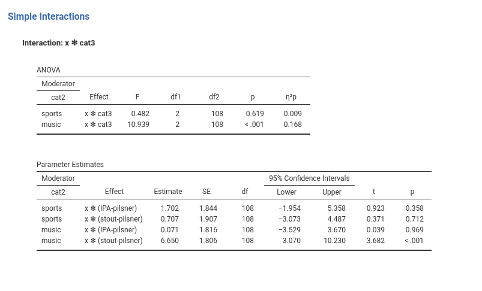

Chapter 2 The General Linear Model
Draft version, mistakes may be around
keywords General Linear Model, Regression, ANOVA, Interaction, Moderation
2.1 Introduction
The general linear model (GLM) encompasses the majority of the analyses that are commonly part of any practitioner’s statistical toolbox. There are good reasons for that: with a good knowledge of the GLM one can go a long way. Within the GLM one finds analyses such as simple and multiple regression, Pearson correlation, the independent-samples t-test, the ANOVA, the ANCOVA, and many of their derivations, such as mediation analysis, planned comparisons, etc (cf. 1.4). The common theme of all these applications is that the dependent variable is continuous, hopefully normally distributed, and that the sample is composed of non-related, independent cases. The most basic yet very important application of the GLM is the simple regression, a GLM with one continuous independent variable (IV).
2.2 One continuous IV
AKA Simple Regression
Consider the dataset manymodels (cf. 1.3). The dependent variable is a continuous variable named ycont, and we want to estimate its linear relation with a continuous variable named x. The extensive relation between the two variables can be appreciated in a scatterplot. It is clear that ycont and x can be any variable, as long as we can consider them as continuous. For the sake of the argument, let us imagine that we went to a bar and measured ycont as the average number of smiles smiled by each customer in a given time and \(x\) as the number of beers drunk for the same period.
What we want to know is the average increase (or decrease) of the dependent variable as the independent variable increases. Thus, how many smiles on average one should expect for one more beer? We ran a GLM to get the answer.
2.2.1 Input
We set the ycont variable as the dependent variable and the x variable as the independent continuous variable (see 1.4.4), and look at the results.
2.2.2 Model Recap
First, we check out the Model Info Table.
This is a recap table that says that we did what we wanted to do, and how we did it. The second table we get is the Model Fit Table, where the \(R^2\), the adjusted \(R^2\), and their inferential test are presented.
2.2.3 Model Fit
The \(R^2\) gives us the first glance of the model from the variance angle (cf. 1.4.1). The short story says that our model (in this case the independent variable \(x\)) explains, or accounts for, .323*100 percent of the variance. So, if all differences in the smiles (ycont) are set to 100, 32% of them can be associated with the number of beers drunk (\(x\)). The Adj.\(R^2\) is the estimation of the variance explained by the model in the population, and the df is the number of parameters estimated by the model apart from the intercept: Here is one because we have one independent variable that requires only one coefficient. The F column gives the F-test testing the null hypothesis that \(R^2\) is zero, and p is the probability of obtaining the observed \(R^2\) under the null hypothesis. If you find this story a bit dull, you might want to read the full story in Appendix A.
2.2.4 Omnibus Tests
With only one continuous variable this table is not very useful, but we comment on it anyway to get us familiar with the ideas of the two points of view always available in a linear model (cf 1.4.1). The first line is there only for legacy compatibility purposes. It reports the inferential test of the model as a whole, which we already saw in 2.2.3. The second line tells us the amount of variance of the dependent variable explained by the independent variable. In this case, the \(p\eta^2\) is equal to the \(R^2\), because there is nothing to partial out (there is only one independent variable). Instructive, however, is to select the option \(\epsilon^2\).
we can notice that the \(\epsilon^2\) is equal to the adjusted \(R^2\). Yes, that is going to stay: \(R^2\) and \(\eta^2\) indices (partial or not) are the sample estimates of variance explained, whereas \(R_{adj}^2\) and \(\epsilon^2\) effect size indices (partial or not) are the population version (\(\omega^2\) is population too). People tend to use the sample version of these indices (\(\eta^2\) and \(R^2\)) when they should use the population version (\(R^2_{adj}\) and \(\epsilon^2\)). The same goes for \(\omega^2\) index, but you want to read this about why you want to use them, and this how they are computed . In a nutshell, \(R^2\) and \(\eta^2\) tell what happened in the sample, \(R_{adj}^2\) and \(\epsilon^2\) tell what should happen in the population.
2.2.5 Coefficients

The regression coefficients table, here called the Parameters Estimates (Coefficients) table, informs us about the size and the direction of the effect. The interesting coefficient is the one associated with the independent variable (the Estimate column). Here it is \(3.808\). This means that for every unit increase in the independent variable the dependent variable increases, on average, of \(3.808\) units. In our toy example, for each beer one drinks, on average, one smiles \(3.808\) smiles more. This is the regression coefficient, the very first and most solid pillar of the linear model. This interpretation is going to stick, so keep it in mind, because when models get more complex, we are going to amend it, but only to make it more precise, never to betray it.
The intercept, which is not focal here (nobody looks at the intercept), is worth mentioning for the sake of comparison with other software. If you run the same analysis in SPSS, R, Jasp, Stata, etc, you get the same estimate for the x variable, but a different (Intercept). Recall that in any linear model the intercept is the expected value of the dependent variable for \(x=0\). In GAMLj, however, the independent variables are centered to their means by default, so \(x=0\) means \(x=\bar{x}\). So, in GAMLj the intercept is the expected value of the dependent variable for the average value of \(x\).
Why centering? First, centering does not change the results of the regression coefficients of simple and multiple regression, so it is harmless in many situations. However, when an interaction is in the model, centering guarantees that the linear effects are the main effects one expects, and not some weird effects computed for the moderator equal to (possibly non-existing) zero. Furthermore, I believe that very few variables have a real and meaningful zero, so their mean is a more sensible value than zero 1. If your variables really have a meaningful zero (which you care about), you can always “unscale” your independent variables setting them to Original in the Covariates scaling panel.

2.2.6 Pearson Correlation
Across sciences, the most used index of association between two variables is the Pearson Correlation, \(r\), otherwise named zero-order correlation, bivariate correlation, standardized covariance index, product-moment correlation, etc (pick any name, the Pearson correlation is a case of the Stigler law of eponymy anyway).
What is important here is that the Pearson correlation is just the standardized regression coefficient of a GLM with only two continuous variables (one DV Dependent Variable , on IV Independent Variable ). In GLM terminology, it takes the name of \(\beta\). In our example, the correlation
between ycont and x is \(.568\). We can verify this by asking jamovi to produce the correlation between the two variables in the Regression->Correlation Matrix menu.

As expected, the correlation and the \(\beta\) are the same. More specifically, the Pearson correlation is the regression coefficient that one obtains if the GLM is run after standardizing (computing the z-scores) both dependent and independent variable. This gives us a key to interpret the Pearson correlation in a precise way: Remembering that any standardized variable has 0 mean and standard deviation equal to 1, we can interpret the \(r\) (and therefore the \(\beta\)) as the number of standard deviations the dependent variable moves as we move the independent variable of one standard deviation. It varies from -1 to 1, with 0 meaning no relation.
When we deal with GLM with more than one independent variable, the link between the \(\beta\) and the Pearson correlation is lost, but \(\beta\)’s remain the coefficients obtained after standardizing the variables, so they remain the standardized coefficients.
If the user decides to report the \(\beta\) coefficients, they would likely want to report the \(\beta\) confidence intervals. They can be asked for in the input by flagging the “\(\beta\) C.I. option”.
2.2.7 Plots
It is always a good idea to look at your model results with a plot. A plot shows your fitted model (predicted values). Because a model is always an approximation of the real data, we want to show our predicted values against, or together, the actual data. In Plots panel, we can set up a plot as follows:
and see the results:
By default, the plot shows also the confidence bands around the regression line. The bands are the continuous version of the confidence intervals, and indicate the range of values where the predicted value are expected to lay.
Notice that the independent variable scale is centered to 0. This is because GAMLj centers continuous variable by default (cf 2.2.5). If a plot with the original scale is preferred, one can flag the option X original scale in the Plots panel.
2.3 More continuous IVs
AKA Multiple Regression
Let us add to our model the z variable, again a continuous variable. To keep up with our toy example, let’s assume that z was a measure of participants’ extroversion.
The results are now updated. Let’s go through the most important tables.
2.3.1 Model Fit

The \(R^2\) gives us the variance explained, or accounted for, of the dependent variable by the whole model. This means by both x and z, alone and together. The overall variance explained is statistically different from zero, so we can say we do explain some variance of smiles (ycont) thanks to the variability of beers (x) and extroversion (z). The question is now how each independent variable contributes to this variance explained. We need to look at the individual contributions, so the Omnibus Tests.
2.3.2 Omnibus Tests
Please notice that I selected \(\eta^2\), partial \(\eta^2\), \(\epsilon^2\), and partial \(\epsilon^2\), so we can interpret these indices. Before that, however, we can mention that the x variable effect is statistically different from zero, F(1,117)=58.87, p.<.001, whereas the effect of z reaches the predefined level of significance by a very tiny margin, F(1,117)=4.242, p.=.042. So we can say that there is enough evidence to believe that both effects are different from zero, although the former seems more solid than the latter. Statistical significance, however, is only a part of the story: effects should be evaluated on at least three dimensions: significance, size
and direction. We now want to evaluate their size.
Effect size indexes are good tools to evaluate effect sizes (nomen omen). We start with the partial \(\eta^2\), mainly because it is the most used and reported one effect size index in the literature (I always thought that is the case because it is the only ES produced by SPSS GLM). The partial \(\eta^2\) is the proportion of variance uniquely accounted for by the independent variable, expressed as the proportion of the variance of the dependent variable not explained by the other independent variables. In short, for x (beers) is the proportion of variance of smiles not explained by extroversion that is explained by beers. In other words, it answers the question: if everybody had the same level of extroversion, how much variance would beers explain?
Notice that the unique variance explained by beers (x), namely 31.2%, is computed after removing the variance explained by extroversion (z). Often you want to know how much variance a variable explains of the total variance, so of all the variance of the dependent variable. That is the \(\eta^2\), the variance uniquely explained by a variable as a proportion of the total variance of the dependent variable. In other words, it answers the question: how much variance of smiles would beers uniquely explain?
The \(\epsilon^2\) and partial \(\epsilon^2\) indexes can be interpreted as the \(\eta\)’s, but they are adjusted to represent the population variances, not the sample variances. So, they are better estimations of the “real” effect size indexes.
A detailed description of the computation of these indexes can be found in GAMLj help page
2.3.3 Household Chores
Effect size indexes (partial vs not partial ones) are usually explained with Venn Diagrams. We try here without them. Assume you leave in a house with another person. There are 100 chores to do in your household, such us washing the dishes, cleaning the windows, and taking the dog out for a walk. You do 20 chores, 5 of which you did together with your companion. Your companion did 40 chores (they are always better), including the ones you did together. So, altogether you people did 55 chores, your companion did 35 alone, you did 15 alone, and 5 chores were done together.
As a couple, your overall contribution is 55/100, so your \(R^2=.55\). You alone did 15 chores, so your unique contribution is \(\eta^2=15/100=.15\) of the total amount of chores to be done. However, of the chores left to do by your companion (60), you did alone 15, so your partial contribution is \(p\eta^2=15/60=.25\). So the difference between \(\eta^2\) (or any non-partial ES) and its partial version is the denominator. Non-partial indexes are proportions of the total, partial ones are proportions of the total minus the part accounted for by the others.
In any household, we would use the \(\eta^2\), but many authors are still using the \(p\eta^2\). What is important is to know the difference between the two computation methods, so we can feel free to use which one we prefer. A deep discussion of this matter can be found in Olejnik and Algina (2003), which I recommend reading.
2.3.4 Coefficients
Now we look at the direction and intensity of the effects, interpreting the Parameters Estimates (Coefficients) Table.
For each variable effect, we see the Estimate (usually called the \(b\) coefficients), the standard error (SE), the confidence intervals, the \(\beta\), the degrees of freedom (df), the t-test (t) and the p-values (p). So, the full set of estimations (\(b\) and \(\beta\)) and the inferential tests (t-test, C.I. df and p-values). Let’s interpret them for \(x\):
- \(b\) : keeping constant \(z\), for one unit more in \(x\) we expect the dependent variable average score to increase of \(3.777\) units.
- \(\beta\) : the effect corresponds to a standardized coefficient of \(.564\), indicating that for one standard deviation more in \(x\), \(ycont\) increases of .564 standard deviations, keeping constant the effect of
z. - \(C.I.\) : “Were this procedure to be repeated on numerous samples, the proportion of calculated 95% confidence intervals that encompassed the true value of the population parameter would tend toward 95%” (cf. Wikipedia). Weird? Yes, that’s what confidence intervals are. But what about 2.785 and 4.769? Well, they are the two values that include 95% of the cases of the distribution of sample estimates if, and only if, we got exactly the right population parameter in our sample. But we have no way to assess whether we did, so there is not much to learn from these two numbers. This book is not the right place to discuss this issue, but interested readers may enjoy reading Mayo (1981).
2.4 Continuous IVs and interaction
In the previous model, we can make a plot of the effect of beers (x) on smiles (ycont), at different levels of extroversion (z). This can be achieved in GAMLj by asking for a plot as follows:
The three lines depicted in the plot are the effects of x on ycont, estimated at different levels of z. Because z is continuous, GAMLj automatically sets the focal levels of z equal to the mean, on SD above the mean, and one SD below the mean (this can be changed, see below).
As expected, the three effects depicted are perfectly parallel. This is because in multiple regression, the effect of each variable is computed keeping constant the other variable, which is equivalent to saying that the effects are computed as if they were the same at each level of the other variable. In other words, they are forced to be the same, no matter the data. But this constrain can be removed by adding an interaction in the model. An interaction allows the effect one variable to change at different levels of the other. In other words, an interaction allows the effect of x to depend on the levels of z. The interaction coefficient tells us how much the effect of one variable changes at different levels of the other. Let’s do it.
In the Model panel, we select both variables on the left field and move them together to the right field, defining an interaction \(x*z\).
The results updated accordingly showing now also the interaction effects.
Let’s focus on the Parameter Estimates (Coefficients) Table. When there is an interaction in a linear model, the effect associated with the independent variables are the effect of the independent variable computed for the other variable equal to zero. This is not a software choice, that is the way a linear model is (Aiken, West, and Reno 1991). However, GAMLj, by default, centers the continuous variables to their means, so the linear effects can be interpreted as main effects, namely, the effect of the variable computed on average, at the average level of the other variable. Thus, we can say that, on average, beers (\(x\)) has a positive effect on smiles (\(ycont\)) of \(3.686\), corresponding to a standardized effect of \(.550\). For the average level of beers (\(x\)), the effect of extroversion (\(z\)) is \(.954\), corresponding to a standardized effect of \(.156\).
As regards the interaction effect, \(x*z\), it tells us that the effect of beers (\(x\)) increases of \(1.028\) units for each unit more of extroversion (\(z\)). We see that this effect is statistically significant, so we can say that the effect of beers changes at different levels of extroversion. We should make clear that the same interpretation is valid if we invert \(z\) with \(x\). The effect of \(z\) is different at different levels of \(x\).
2.5 Moderation=interaction
Many authors calls this type of effect a moderation effect. They are correct, but there is nothing special about interactions between continuous variables. Any interaction effect, no matter if the independent variables are continuous or categorical, tests a moderation model. The only difference between moderation and interaction is theoretical. When we lay out a theoretical model, we declare which variable is the hypothesized moderator and which is the independent variable. Statistically, they are equivalent, and the strength of moderation is tested with an interaction. We will see that moderation models are tested also with categorical variables (within what people calls ANOVA) or when one variable is categorical and the other is continuous (within what people used to call ANCOVA, but not anymore). We have seen that naming techniques rather than models is cumbersome (1.4). The same goes for moderation. Just keep in mind that moderation refers to a theoretical model, its statistical counterpart is interaction, for all kinds of variables.
2.6 Simple Slopes
When an interaction is present (let’s say it is significantly different from zero), we can probe it (Aiken, West, and Reno 1991). Probing means to estimate, test, and visualize the effect of one independent variable at different levels of the other. The “other variable” is usually called the moderator: The variable that is supposed to change the effect of the independent variable. In our example, we focus on the effect of beers (\(x\)), and different levels of the moderator extroversion (\(z\)). First, let’s look at the plot.
We can see now that the lines representing the effect of \(x\) at different levels of \(z\) are no longer parallel, they have different slopes. Looking at the plot, we can see that the effect of \(x\) is stronger for high levels of \(z\) (Mean+1*SD), than for the average level of \(z\) (Mean) than for low levels of \(z\) (Mean-1*SD).
The plot is very useful to visualize how the effect of one variable changes at different levels of the moderator. Often, however, we also want to estimate those slopes and maybe test them. We can do that in the Simple Effects panel. Recall that simple slopes is just a name for simple effects applied to continuous variables, so GAMLj uses the term simple effects because it generalizes to any type of independent variable.
The first table reports the F-tests and indices of explained variance (2.3.2). The coefficients table reports the slopes of the effect of the x variable at different levels of the z variable. Practically, the tables report the effect sizes and the inferential tests associated with the lines depicted in the plot.
If one wants to change the levels of the moderator at which the effects are estimated and plotted, one can go to the Covariate Scaling panel and change the Covariate conditioning setup. For instance, one may want to explore the effect of x at 2 SD away from the mean, so one sets the field under Mean \(\pm\) SD to 2. One can also decide to condition the slopes to specific percentiles of the z variable, by selecting Percentiles \(\pm\) SD, which conditions to 25th, 50th, 75th percentile (cf GAMLj help page).
We can be happy with the analysis, as we have estimated, tested, and quantified all the interesting effects of our independent variables on the dependent variables. We discuss simple effects again in 2.13. An equivalent example, with different data, can be found in GAMLj help page: GLM example 1.
2.7 Categorical IVs
AKA ANOVA
We can now work with a model with categorical independent variables. The dataset provides cat2 and cat3 variables, with two groups and three groups respectively. Their combination produces the following groups.
To put some flesh on the bones, let’s imagine that cat3 be the type of beer one drinks, with levels stout, IPA and pilsner. Assume cat2 be type of bar, music bar vs sports bar. To remember, let’s put some labels on the variables levels.
Take a note about the fact that the specific values present in the dataset of a categorical variable have no bearing on the results of the analysis. The categorical variables are coded by GAMLj independently of their values: It applies a coding system to cast the categorical IV Independent Variable into the model. We can also change the coding system with the module options (see below).
We can now run a new model, with ycont as dependent variable, and the two categorical variables as the independent ones.
The tables we have seen for the first model are the same produced now, we only need to adjust some interpretation to reflect the categorical nature of the variables.
2.7.1 Model Fit and Omnibus tests
Model Fit and ANOVA Omnibus tests tables do not require adjustments of the interpretation. Here we see that our model explains \(.162*100\) percent (\(R^2\)) of the dependent variable variance, \(.125*100\) percent as population estimate (Adj. \(R^2\)), and that the type of bar (cat2) has a main effect, type of beer (cat3) has a main effect, and there is no indication of an interaction. Effects are small, with cat2 main effect explaing \(.112*100\) percent of the variance not explained by the other effects, cat3 main effect explaining \(.056*100\) percent, and the interaction explaining only around 2% of the partial variance.
2.7.2 Coefficients
When dealing with categorical independent variables, one usually does not look at the coefficients, but one goes straight to the plots to interpret the results. Nonetheless, the coefficients are present and they can be interpreted.
Their interpretation depends on the way the levels (groups) of the variables are coded. In fact, to cast a categorical variable into a linear model (any linear model), it must be coded with weights (numbers) that represent specific contrasts. We need \(K-1\) contrasts to represent \(K\) groups (see appendix B for more details). These contrasts are commonly called dummy variables, but it is more correct to call them contrast variables. GAMLj default uses the simple coding system, as it is evident in the Factor Coding tab.
Simple coding contrasts estimate the mean difference between one reference group and each of the other groups. The first level present in the dataset is used as reference group. Simple coding yields the same comparisons as the more classical dummy system, but simple coding centers the contrasts to zero, so in the presence of an interaction in the model, the main effects are correctly estimated as average effects. So, for cat2, we need only one contrast which compares music vs sports. The coefficient \(4.343\) is the mean difference (in the dep variable) between the two groups. So, people in the music bar smile 4.343 smiles more than people in the sports bar. For type of beer (cat3), we need two contrast variables, because we have three groups: cat31 compares the reference group pilsner against IPA, the second contrast cat32 compares pilsner with stout. The remaining coefficients are required to estimate the interaction cat2 X cat3.
We should notice that the model does not estimate all possible contrasts, for instance stout is not compared with IPA. The reason is that those contrasts are redundant in order to capture the whole explained variance (cf. Appendix B). If one needs all possible comparisons, one can use Post Hoc Tests panel to obtain the comparisons (cf. 2.8).
GAMLj offers several coding systems to code the categorical variables. If you want to take a look at what the contrasts are comparing, you can ask for Contrast Coefficients tables, so a table visualizing the actual coding is produced.
All coding system used in GAMLj are explained in details in the GAMLj help page: contrasts.
2.7.3 Plots
As for the continuous IVs Independent Variables case, we can plot the results. When the IVs Independent Variables are categorical, we obtain the plot of the means.
From the results is evident the main effect of cat2, with music bar showing a higher average than sports bar, and a small main effect of type of beer, with stout vaguely larger than IPA and larger than pilsner.
2.8 Post-hoc tests
Sometimes people want to probe main effects or interactions of categorical variables to test all possible comparisons among means. It should not be a habit to do so, because the coefficients table already provides comparisons that may be enough to explain the results. One can also use a simple effects analysis to test specific comparisons. Nonetheless, if one really needs all possible comparisons, one can use the Post Hoc Tests panel. Here we ask for the post hoc tests of the variable cat3, because cat2 features only two levels, so probing is useless (we have already its main effect). In this example we do not probe the interaction, because it is very small and not significant, but the module allows probing all possible effects.
Post hoc tests are basically t-tests comparing any pair of levels of the independent variables in their dependent variable means. So, here we have the mean for the pilsner group compared with the IPA group, the pilsner group compared with the stout group, and the IPA group compared with the stout group. For each comparison we have the difference in means, the confidence intervals, the t-test, df, and p-value. All columns report what a simple t-test would yield, but the p-value column is different. The p-value is adjusted for multiple comparisons, meaning that the p-value is calculated to counteract the higher probability of finding something singificant when multiple tests are run. The adjustment is proportional to the number of comparisons that are tested.
Why adjusting? Well, adjustment is required when the researcher does not have an a priori hypothesis regarding which comparison should be significant and which should not. If one does not have a clear hypothesis, any comparison that comes out as significant will be considered as real, so different from zero. However, when several comparisons are tested, the probability of obtaining at least one comparison as significant is not .05 (\(\alpha\)), as one expects, but higher: the more comparisons one tests, the higher the probability.
Recall that any inferential test (frequentist tests, I should add) lays out a null-hypothesis, say \(\Delta=0\) (difference equal to zero). The t-test returns the probability of obtaining the observed result (here \(-2.788\) for pilsner vs stout) if we were sampling from a distribution in which \(\Delta=0\). When the p-value is low, we say that it is very unlikely that our result comes from a distribution where \(\Delta=0\), so we reject the null-hypothesis. Unlikely, however, does not mean impossible, so there is always a chance to be wrong in rejecting the null-hypothesis. If we use a significance cut-off of \(\alpha=.05\), we accept the risk of being wrong 5% of the time, if the population difference is indeed zero. The good news is that we’ll be right \(1-\alpha=.95\) (*100) of the times. However, this reasoning is valid for one test. If we run two tests, we want to take the right decision for boths, so the probability of being right in both tests is \((1-\alpha)^2=0.902\). If we run three tests, we will be right with probability \((1-\alpha)^3=0.857\). So, we capitalize on chance, meaning that it becomes more and more likely to get at least one test as significant, even if they all come from a population where no difference is present.
Multiple comparisons adjustment corrects the p-value in order to make a significant result more difficult to obtain. Practically, the p-value is increased proportionally to the number of comparisons that are tested. There are different methods to adjust the p-value, and they are listed in the panel as options: Bonferroni, Tukey, Holm, Scheffe, Sidak. They are all alternative ways to adjust the p-value. The interesting dimension along which they differ is liberalism-conservativism. In statistics, a liberal test is more likely to yield a significant result than a conservative test, ceteris paribus. Liberal tests are more powerful but their correction of the p-value may not be enough, whereas conservative tests correct for multiplicity but may result under-powered. Bonferroni and Sidak adjustment tend to be more conservative than the others. Tukey correction seems the more reasonable choice in most circumstances (Midway et al. 2020).
Recall, post hoc tests are needed when the researcher is willing to accept any significant result as worth mentioning and interpreting. On the other hand, if one has a clear pattern of means hypothesized, adjustment may not be needed and the specific comparisons may be evaluated without correction.
2.9 Cohen’s d
Cohen’s \(d\) is probably the most used effect size index to quantify a mean difference. It expresses the mean difference in a standardized scale: It is the ratio of the mean difference over the within groups standard deviation, or residual standard deviation. Unfortunately, Cohen (J. Cohen 2013) defined the \(d\) index for the population, and thus it is not clear how to compute it in the sample. GAMLj offers three options.
Cohen’s d (model SD) \(d_{mod}\): the means difference is divided by the estimated standard deviation computed based on the model residual variance.
Cohen’s d (sample SD) \(d_{sample}\): the means difference is divided by the pooled standard deviation computed within each group.
Hedge’s g \(g_{sample}\): the means difference is divided by the pooled standard deviation computed within each group, corrected for sample bias. The correction is the one describe by Hedges and Olkin (2014) based on the Gamma function.

The two d’s differ in their adherence with the model being estimated. The model SD version, gives the estimated d after removing the variance explained by the other effects in the model, so it is the actual effect size of the comparison of the estimated marginal means. The sample SD gives the crude standardized difference, as if the model was not estimated at all, but only the two groups were considered. The model SD should be preferred as default index to report in a model, the sample SD version can be useful to compare effects in the literature obtained with a different model or without a model.
Hedge’s g gives a population estimate of the sample \(d\).
2.10 Estimated marginal means
The means that are plotted in the plot can be visualized, with their standard error and confidence intervals, by defining the variables for which we want them in the Estimated Marginal Means.
In balanced designs with only categorical IVs Independent Variables , they are the means of the groups (or combinations of groups). When there are also continuous IVs Independent Variables , they are adjusted for the continuous variables: They are the means estimated after keeping constant the continuous independent variables.
If marginal means are requested for a continuous variable, they represent the expected value of the dependent variable for three interesting levels of the independent variable, where the interesting values are defined as for the simple slope technique (cf 2.6)
For instance, in model 2.4, if we ask for the estimated marginal means for \(x\), we obtain the following estimates:

meaning that, based on the model, we expect the number of smiles (ycont) to be 28.03 for low level of beers (1 SD below average of x), 31.7 for the average level of beers (average of x), and 35.9 for high levels of beers (1 SD above average of x).
2.11 Categorical and Continuous IVs
AKA ANCOVA
We now insert in the model also \(x\), so we have both categorical and continuous IVs Independent Variables . This model was once called ANCOVA, but it did not allow for interactions. We simply call it a GLM.
Keeping up with an old (SPSS?) tradition, GAMLj does not automatically insert into the model interactions involving a continuous variable, so if one needs them, they should be added manually (see below). For the moment, here is our model.
2.11.1 Results tables
Combining categorical and continuous IVs Independent Variables does not really change the way we interpret the results. We interpret the continuous variable effect like we did for the continuous variables GLM (2.3) and the categorical independent variables effects as we did for the GLM with categorical variables (2.7). So, in the Model Fit Table we found the variance explained by all the effects combined, in the ANOVA Omnibus Tests Table we find the explained variances and their tests, and in the Parameter Estimates (Coefficients) Table we find the coefficients. We just need to keep in mind that all the effects are computed keeping constant the other variables, so we can use this kind of model to covariate variables that may have spurious effects. That is why in the last century this model was called ANalysis of COVAriance. At that time, one assumption of this analysis was that there was no interaction between the categorical variables and the continuous variables. Nowadays, we can release the assumption, and just test the interaction, in case is there.
2.12 Categorical and Continuous Interactions
There is nothing special about interactions between continuous and categorical variables, they just test a moderation model. To obtain the interactions we select all variables in the Model panel and click the arrow to bring them in the Model Terms field.
Upon updating the model, the results update as well, and now we can check the main effects, the 2-way interactions and the 3-way interaction. We focus on the variances explained and F-tests.
When the model features interactions of different orders, it is a good idea to start the interpretation from the highest order interaction, in our case the 3-way interaction. Here it seems to be different from zero, F(2,108)=6.340, p=.002, \(p\eta^2=.105\).
This means that the 2-way interaction x * cat3 is different at different levels of cat2. In general, a 3-way interaction can be interpreted by picking a moderator (any will do, the interaction is symmetrical), and saying that the other two variables interaction changes at different levels of the moderator.
Upon finding a higher order interaction, one wants to plot it and interpret its direction. This is because the higher order interaction shows a pattern of results that is more specific then lower order effects. In fact, lower order effects are always interpreted on average, so they are less specific than the higher order effect. Practically, the cat2 * cat3 significant interaction in our results is not very informative given these results, because it says that on average, meaning averaging across levels of x, there is an interaction between type of bar and type of beer. But we know from the significant 3-way interaction that the 2-way interaction changes at different levels of x, so it is not really important its value on average.
If the 3-way interaction was not significant, or minuscule for our standards, we would simply start probing the lower order effects.
2.12.1 Plot
To visualize the 3-way interaction, we should pick the two variables that create the 2-way interaction we want to explore, and a moderator: the 2-way interaction is displayed for different levels of the moderator. Here we want to see the effect of beers (x) by type of beers (cat3), displayed at different levels of type of bar cat2.
The interpretation can follow these lines: In sports bar, the effect of beers on smiles is generally positive, it is stronger for stout and IPA beers, and weaker for pilsner. In music bar, the effect of beers on smiles is positive as well, but stronger for stout and weaker and very similar for pilsner and IPA. The fact that the two patterns can be described differently across types of bar is justified by the significant 3-way interaction.
2.12.2 Simple Effects
We can quantify and tests all the effects depicted in the plots by asking for simple effects analysis. We just need to pick the variable for which we want to study the effects, and select the moderators: the focal variable effect will be estimated and tested for each combination of the moderators values.
The interpretation of these effects follows what we have done for the 2-way interaction before (2.6). However, because we have a 3-way interaction, we can also probe for simple interactions.
2.13 Simple Interactions
Simple interactions are simple effects, in which the focal effect is an interaction. We can ask for this analysis by selecting Simple Interaction option.

This analysis is useful to probe high order interaction. Here we see the x * cat3 interaction computed at the two levels of cat2. So, we can say that for the group music, the interaction is present, whereas for group sports, the x * cat3 interaction is not statistically significant.
2.14 Model-comparison approach
2.14.1 The Method
We have touched upon the fact that many tests and indices in the linear model can be derived by the comparison between two models, one being our full model, the other being a nested model (Judd, McClelland, and Ryan 2017), (cf. Appendix A). A nested model is simply a model that, compared with the full model, lacks some terms, and does not have any term not present in the full model. GAMLj allows custom model comparisons by flagging the option Activate under Model Comparison.
Comparing models is useful when we want to estimate the variance explained by a set of effects (P. Cohen, West, and Aiken 2014), and test this variance. For instance, one may have an experiment with a series of possible confounding variables, and the aim is to estimate the variance explained by the experimental factors (all together) over and beyond the confounding variables explained variances. Another case may be a model in which socio-economical variables (e.g income, real-estate properties, etc) and psychological variables (e.g self-esteem, emotional regulations) are compared in their ability to explain an outcome (say happyness). Besides each individual variable effect size, the researcher may be interested in estimating the variance explained by economics vs the variance explained by psychology. A model-comparison approach may be helpful.
In our running example, we would like to estimate and test the impact of beer (\(x\)) and extraversion (\(z\)) over and beyond the effect of type of bar (\(cat2\)) and type of beer (\(cat3\)). Our full model involves all mentioned variables, plus the interaction between the factors (see Figure above). We now need to specify a smaller model, which includes only the categorical variables and their interaction. We set this model in the Nested Model field.
What we are saying to the module is to estimate a full model, then estimate a model with only the categorical variables, and compare the fit (\(R^2\)). The difference between the two \(R^2\)’s is the variance uniquely explained by the terms present only in the full model, in our case \(x\) and \(z\). The output is the following:
Thus, the full model explains \(R^2=.406\) (*100) of the variance of the dependent variable, the Nested model, without \(x\) and \(z\) explains \(R^2=.162\) (*100) of the variance. Their difference, \(\Delta R^2=.245\) is the variance uniquely due to \(x\) and \(z\) together.
2.14.2 Types of tests
In the General Linear Model, all tests are usually performed with F-test. The F-test works fine and has a solid tradition in statistics. Therefore, it is perfectly fine to use it also to compare models. After all, model-comparison entails comparing variances explained, which is the F-test job since more than 100 years. Recently, the statistical literature has made another test popular in model-comparison methods: The LRT, log-likelihood ratio test. This test is very useful for models estimated maximizing the log-likelihood of the data given the model, such as the generalized linear model or (with some caveats), the mixed model. For those passionate about the LRT, GAMLj offers the option to obtain the LRT also for the GLM, by selecting LRT under Omnibus test. In the GLM, the p-values based on the F-test and the LRT are usually very similar.
2.14.3 Not necessary model-comparisons
One should not be carried away by model-comparisons (the custom version of the method), because it is seldom useful and the usual estimates and tests of the linear model are already some sort of model-comparisons. Recall, for instance, the model with \(x\) and \(z\) as independent variables.
Notice that we selected \(\eta^2\) as an additional effect size index. First, if we make a model-comparison with an intercept only model, we get exactly the \(R^2\) we obtained in the standard analysis. This is because the usual \(R^2\) is already a fit comparison between our full model and an intercept-only model (cf appendix A).
Second, if we now add to the nested model the variable \(z\), we are comparing a model with \(x\) and \(z\) as terms with a model with only \(z\), so we are estimating the contribution of \(x\) to the explained variance.
The \(\Delta R^2\) is now .317, with F(1,117)=56.68, which is exactly the \(\eta^2\) of the \(x\) in the full model, with the same F, df, and p-value. The effect of \(x\) is already a result of a model-comparison test, so we do not need to test it explicitly.
2.14.4 Hierarchical regression
The model-comparison approach allows estimating what many people call hierarchical regression. Hierarchical regression is an analytic strategy, it is not a statistical model. By hierarchical regression one means the estimation of the coefficients of different IV Independent Variable in different models, containing different sets of IV Independent Variable . For instance, one may want to estimate the effects of \(cat2\) and \(cat3\) independently of \(x\) and \(z\), but the effects of \(x\) and \(z\) keeping constant \(cat2\) and \(cat3\). In a hierachical regression software, one specify a first block with \(cat2\) and \(cat3\), and a second block with all variables. The software would estimate two models, and produce a recap table with the coefficients obtained in the first model for \(cat2\) and \(cat3\), and the results obtained in the second model for \(x\) and \(z\). Possibly, the \(\Delta R^2\) is also produced.
This analytic strategy is rarely useful, but if this is really the intent of the analyst, one can use GAMLj to estimate two different models to obtain the coefficients, and then obtain the \(\Delta R^2\) with a model-comparison approach. Alternatively, one can use jamovi regression command, which allows to specify blocks. Results will be identical, only the tables will be organized in different ways.
2.15 Assumptions checks
The GLM is based on several assumptions, a few of which are popular and they are regularly tested or at least checked. We should start saying that assumptions are idealized scenarios in which data show a required property. They are needed to unsure that the expected results (F-test, p-values, etc.) posses the expected properties (unbiasedness, consistency, etc). In other words, the assumptions are required so we can trust the results, cf. Nimon (2012) and Glass, Peckham, and Sanders (1972) for details.
Being idealized scenarios, the observed data are never perfectly abiding by the assumptions, but they approximate the required property with different degrees. The better a property is approximated, the more we can trust the results. The worse is approximated, the more doubts we should cast on our results. Because the properties required by the assumptions are only approximated to a certain degree, assumptions cannot be evaluated only using an inferential test. Inferential tests tend to be interpret as “significant” vs “not significant”, and such a dichotomy is not always useful when evaluating assumptions. For this reason, GAMLj provides both inferential tests and graphical methods to assess the appropriateness of the data with respect of the assumptions.
Here we focus on the homoschedasticity and normality of residuals assumptions.
2.15.1 Homoschedasticity
By Homoschedasticity we mean that the variance of the residuals is constant around the predicted values, that this the residuals spread around the predicted values at more or less the same distance along the model predictions. In other words, the spread of the clouds of points representing the DV Dependent Variable as a function of the IV Independent Variable is constant. When the spread is not constant, we have Heteroschedasticity. Here are two exemplifications:
In cases where the independent variables are categorical, the assumption requires that the variances within groups are more or less the same across groups.
The idea is that the error term, which is the residuals variance, should be representative of the residual variance across all values of the predicted values. This is Homoschedasticity. On the contrary, the error term is not representative of the whole model if the variance of the resifuals is different for different predicted values, because it would be larger or smaller in different parts of the model. That is Heteroschedasticity. Homoschedasticity ensures that the standard errors associated with the estimates are correct, and thus are the inferential tests and the p-values one obtains along the coefficients estimates.
To evaluate the Homoschedasticity we can use two inferential tests and one graphical method.
The tests are the Breusch-Pagan test and the Levene’s test.
Both tests test the null-hypothesis that the variance of the residuals do not change along the predicted values, so the assumption is met when they are not significant. A significant test, on the contrary, indicates that the residuals variance departs from the assumption of homogeneity, and thus we should cast some doubt on the validity of the results.
The Breusch-Pagan is defined for any GLM, so it is estimated whatever our IVs Independent Variables are. The Levene’s test is defined only for categorical IVs Independent Variables , so it is not produced when the IVs Independent Variables are all continuous.
Graphically, we can check the Residuals-Predicted plot. This plot depicts the residuals (in the Y-axis) as a function of the predicted (on the X-axis), so it makes it easy to see whether the spread of the cloud of points changes along the X-axis. The assumption is approximated well when the depicted cloud of points has more or less the same spread along the whole plot. Examples may be:
2.15.2 Normality of residuals
To guarantee unbiased inferential tests, that is valid p-values, residuals should be normally distributed (Gaussian). GAMLj provides the Kolmogorov-Smirnov test, the Shapiro-Wilk test, the histogram plot and the Q-Q plot to assess this assumption.
Both inferential tests share the null-hypothesis that the distribution is normal (Gaussian), thus a non-significant test indicates lack of evidence against the assumption, whereas a significant test indicates departure from the assumptions. Shapiro-Wilk seems more powerful, so it should be preferred in small samples, whereas the Kolmogorov-Smirnov may be more appropriate in large samples.
The first graphical method is a simple histogram of the residuals, on which the module overlays a perfectly normal curve with the same mean and standard deviation of the observed one, so the comparison becomes easier.

Here we want to check that our distribution is not too far away from a normal distribution, especially with regards of the main properties of the normal one: symmetry and increasing density (frequency of cases) closer to the mean.
Another popular graphical method is the Q-Q plot.
The Q-Q plot plots the theoretical quantiles (percentiles) of a perfectly normally distributed variable with the quantiles of our observed distribution. The closer our distribution to the normal one, the closer the scattered points will be to the 45 degrees line.
2.16 Violations Remedies
2.16.1 Robust Standard Error
Whereas it is often the case that both assumptions are violated, the violation of homoschedasticity and the violation of normality of the residuals have different remedies.
Lack of homoschedasticity, that is heteroschedasticity, can be counteracted by using a robust method to compute the standard errors. Whereas robust estimations is a very general term, in the context of the GLM it usually means robust against heteroschedasticity. GAMLj offers robust standard error in the Options panel, under SE method. When Robust is selected, one can choose the algorithm to compute the HC (Heteschadasticity-Consistent) standard errors. GAMLj implements these algorithms as implemented in the sandwich R package, setting HC3 as default as recommended by the package authors.
Setting the SE method to robust updates all results related with inferential tests, and thus the results will be different, and more accurate, proportionally to the strength of the assumption violation.
2.16.2 Bootstrap Confidence Intervals
When the residuals are not normally distributed, or when other assumptions are suspicious, one can rely on Bootstrap Confidence Intervals. The advantage of the bootstrap C.I. is that they do not assume any shape for the residual distribution, because their boundaries are estimated by resampling the observed distribution (cf. Bootstrapping, and Efron and Tibshirani (1994)).
GAMLj offers two methods to compute bootstrap confidence intervals. The percent and the BCa method. The percent method entails building a bootstrap distribution of estimates and select the \(100 \cdot (\alpha/2)\)th and the \(100 \cdot (1-{\alpha /2})\)th percentile of the distribution as the boundary of the interval. In other words, for the 95% C.I (where \(\alpha=.05\)), it selects the 2.5th and 97.5th percentile of the bootstrap distribution. The BCa method stands for Bias corrected and accelerated method. The method corrects the percentile values depending on the skewness of the bootstrap estimates distribution and the offset of the distribution mean compared with the observed estimate. The specialized literature seems to indicate that for generic situations, the percent method gives more accurate results (cf., for instance, Jung et al. (2019)).
The number of bootstrap resampling is set to 1000, but for reliable and replicable results one can set it to 5000 or 10000. Just keep in mind that resampling means to estimate a full model for every bootstrap sample, so the process might be quite time-consuming for large models.
References
I have nothing against zero: my favorite number is 610, which in Italian literally translates to you are a zero, where “you” is meant to be “we all”↩︎